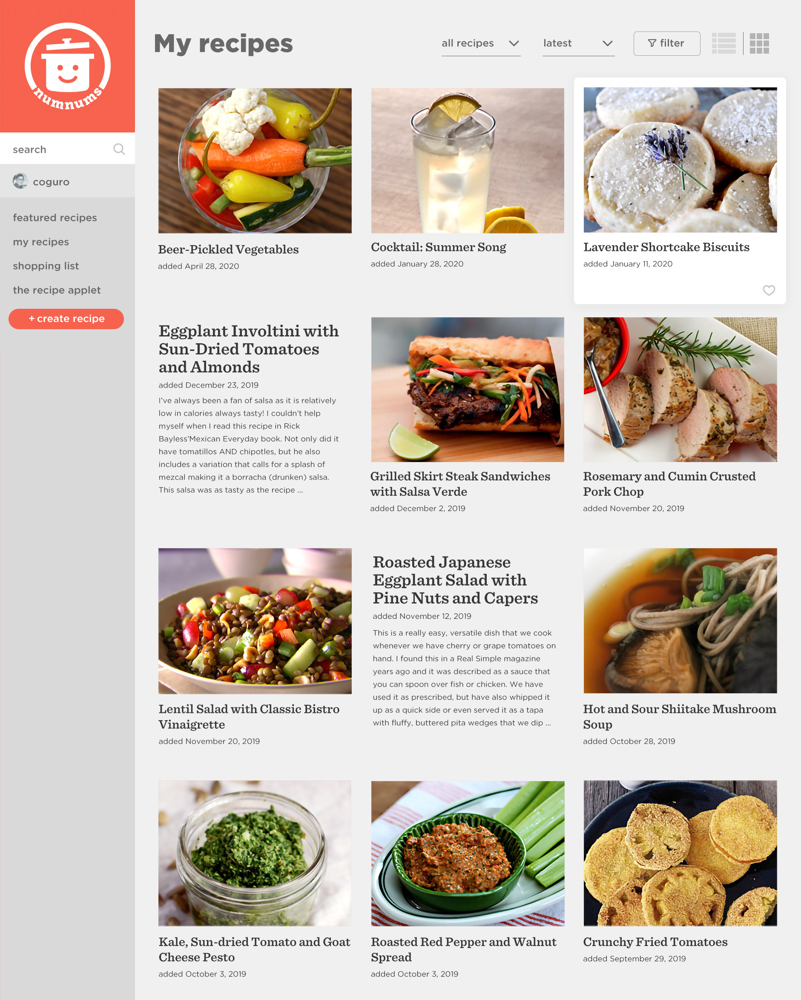
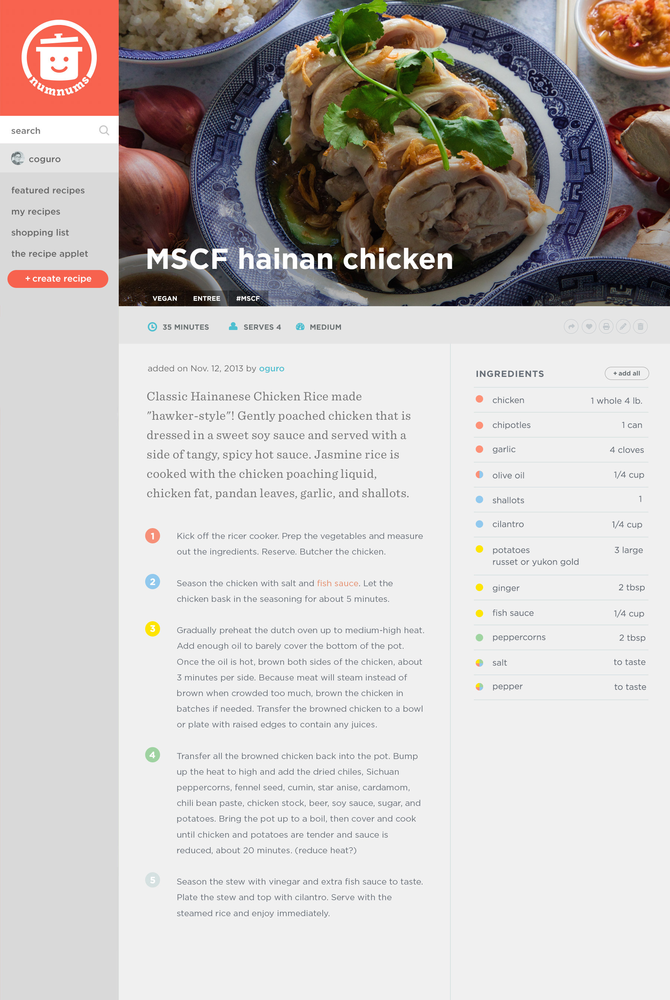
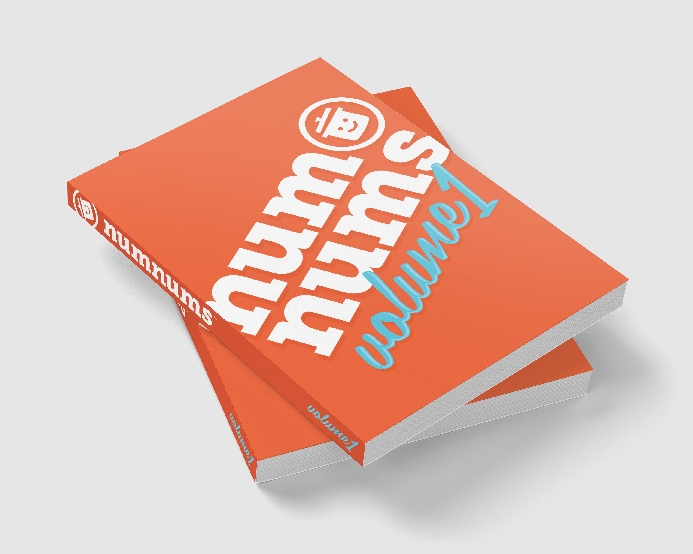
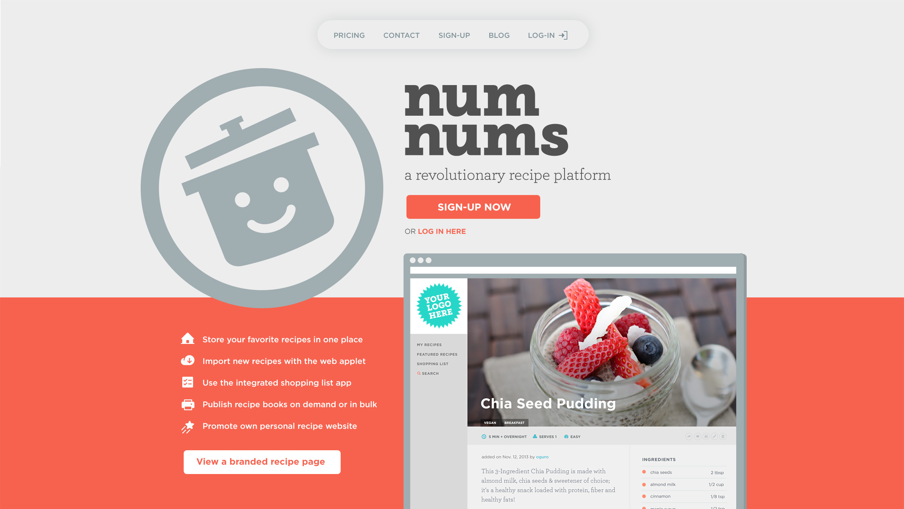
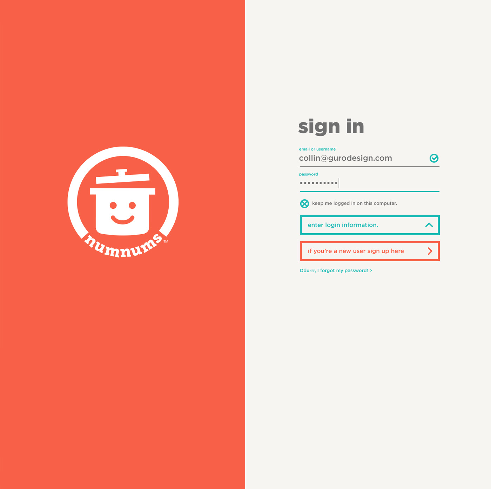
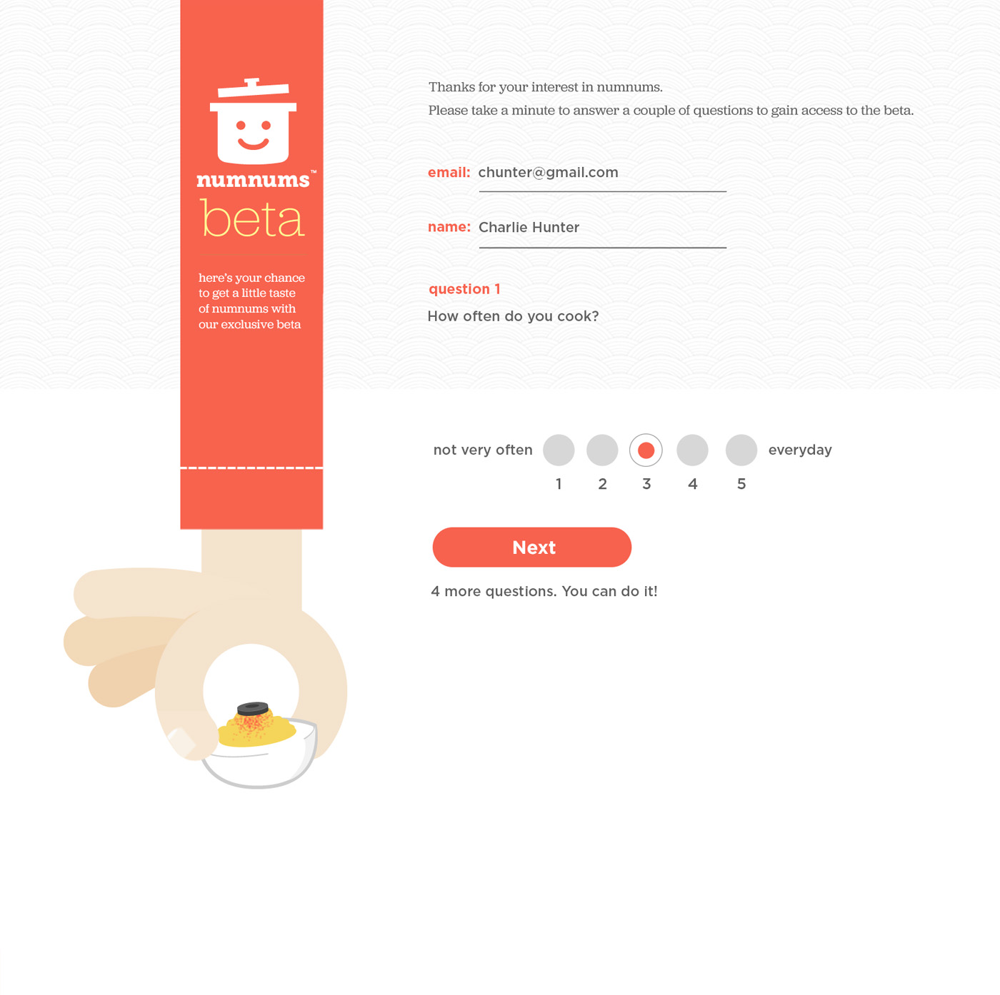
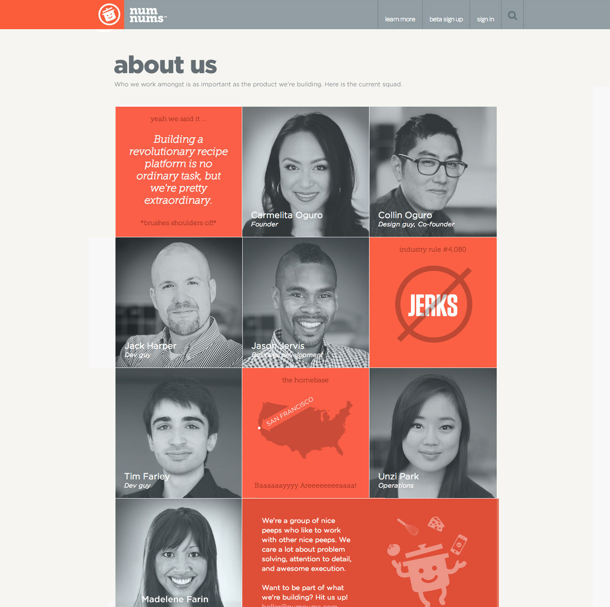
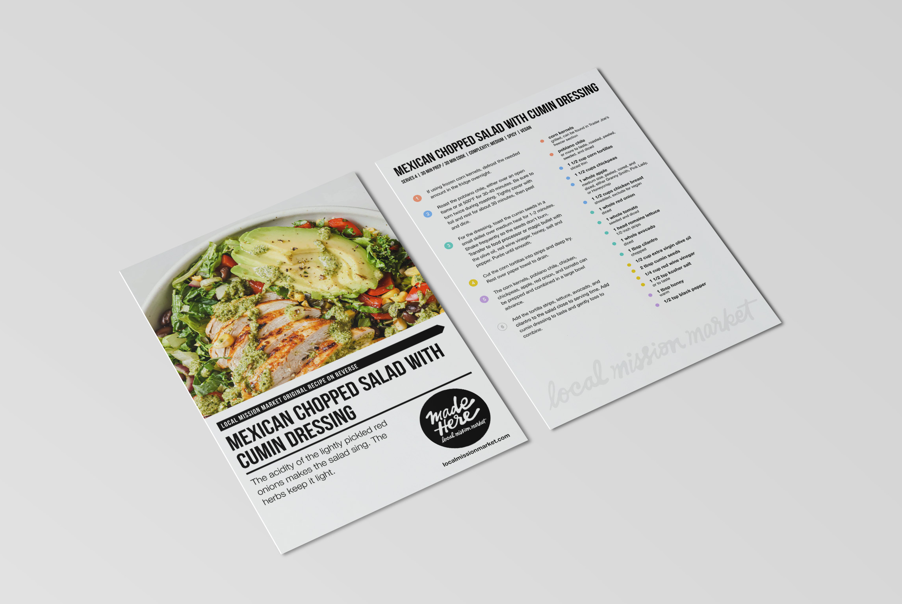
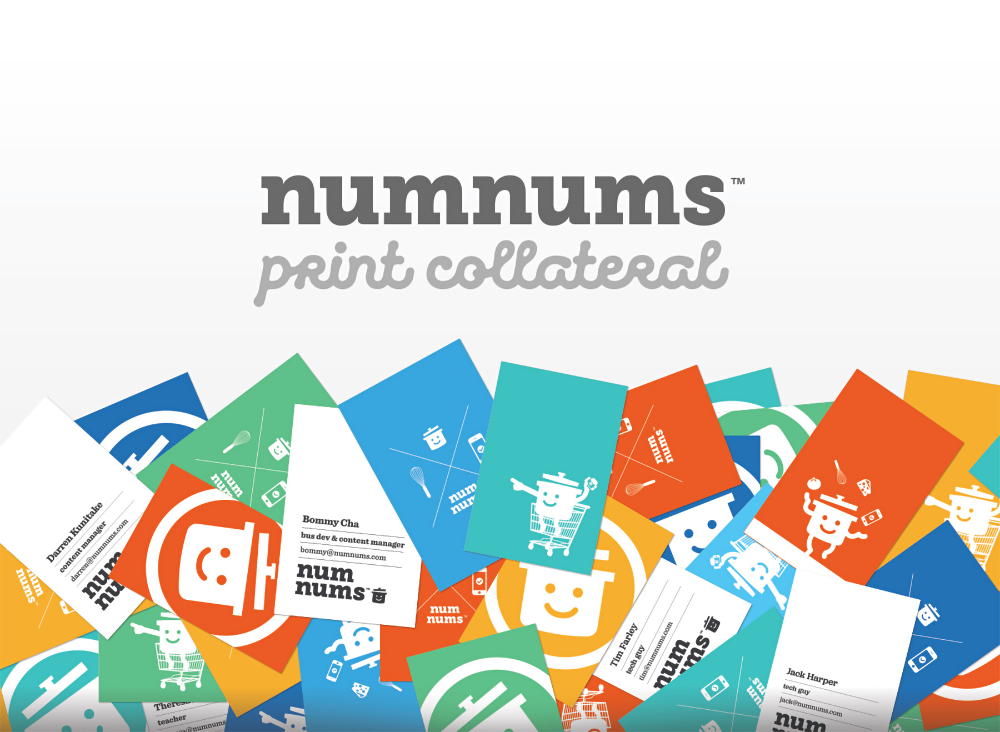
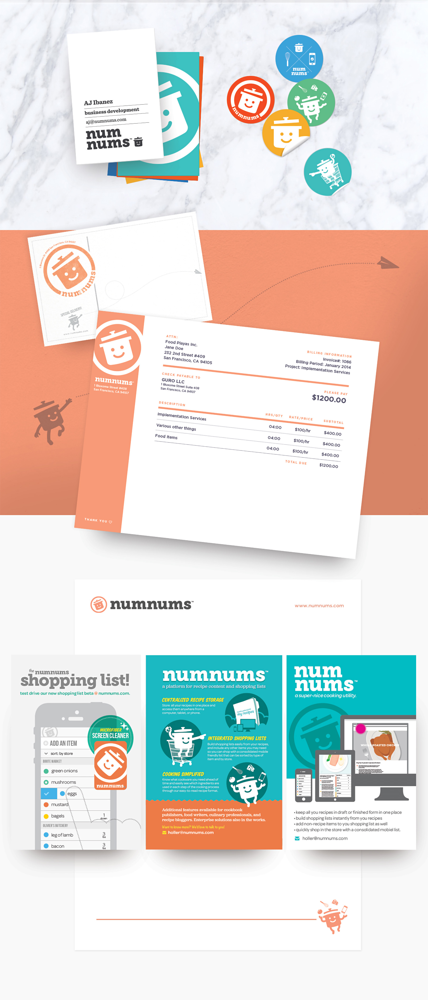

A single recipe platform to rule them all. Built to fill the needs of everyday cooks.

Recipes Everywhere
Online recipes, recipe books, hand written recipes, photos of newspaper recipes. We had recipes all over the place and our collection was growing. We wanted a singular place to store and access them easily. This led to numnums, the recipe repository made for people who p.
Recipe Page
If the recipe page is the foundation of every recipe site, why do most overlook the UX/UI? You can find recipe pages riddled with advertising or long-winded anecdotes and narratives. The 'jump to recipe' anchor link is a common pattern. And while advertising and revenue establishment were important to us, we didn't want to sacrifice user experience.
One design paradigm that was born out of our cooking flow was the ability to map ingredients to steps. Even with proper mise en place there was no visual cue to grab specific ingredients as you read through a recipe. By color coding each ingredient to match each step we were able to visualize the connection and minimize ambiguity. What about ingredients used in multiple steps? Do we multiply each instance of it? No, instead we opted to use mutli-colored indicators for them. To facilitate this we used the font based pie chart, FF Chartwell, which allowed us to implement this solution easily.

Shopping List
A shopping list seems like a common feature in many of today's recipe apps, but in our infancy very few had this feature. Even today most integrations of it seem like an after thought. We wanted ours to have seamless integration, yet be powerful enough to stand alone.
To achieve this we had a handful of differentiators that set us apart, starting with clean purposeful design. Next, we would distinguish ingredient type by grocery 'aisle', color coding and sorting as such. This would buff the shopping experience, making the in-store route more efficient. We would seed the database with pre-categorized items from a grocery SKU API. Sorting would be a critical aspect allowing users to break down lists by aisle, store and recipe depending on need. Each ingredient was mapped back to recipe and you could it access via deep link. Ultimately it was a goal to pair it with a grocery shopping API like instacart or doordash in order to drive referral-based revenue.
Publish Cookbooks
Carmeilta and I have been self-publishing cookbooks since our wedding when we gifted a collection of some of our favorite recipes to our guests. It seemed natural to publish a compendium of numnum recipes as a way to showcase the platform and capabilites. The recipe page layout worked well in print, and incorporating while wkhtmltopdf took some finnegaling to integrate, it's a feature that would resonate with some businesses.







